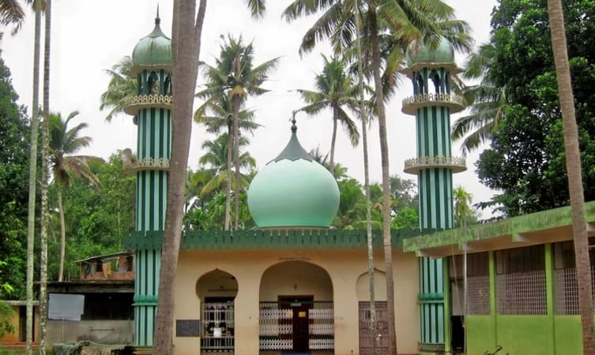
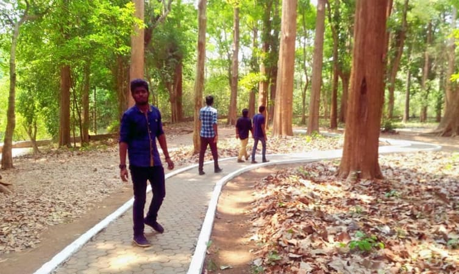
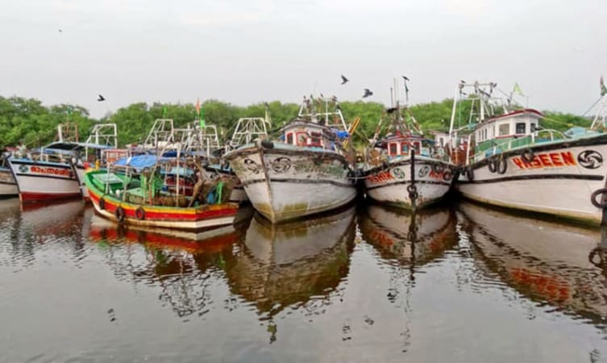
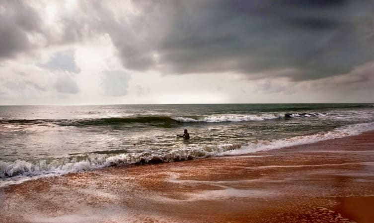
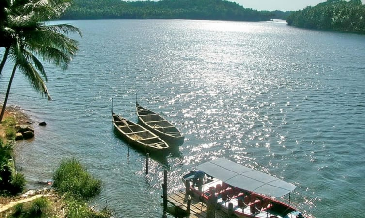
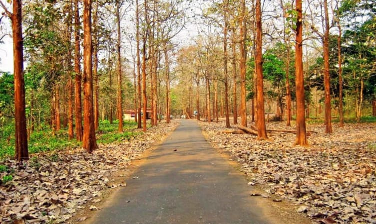
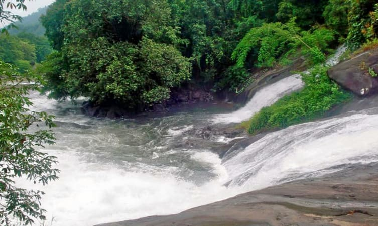

1. Valiya Juma Masjid

2. Nilambur Teak Museum

3. Mamburam

4. Biyyam Kayal

5. Keralamkundu Waterfalls

6. Padinharekara Beach

7. Kodikuthimala

8. Bharathapuzha River

9. Nedumkayam

10. Adyanpara


Bounded by the Nilgiris hills on the East and the Arabian Sea on the west, the district of Malappuram literally the land atop the hills, is remarkable for its unique natural beauty. Perched among the undulating hills and the meandering rivers that flow to reach the coconut-fringed seacoast, the land conceals a unique and eventful history.
The hill country also contributed much to the cultural artistic traditions of the state. The mosques and temples of the land are known for their spectacular festivals. The land of great poets and writers, political and religious leaders, the district has carved a unique place of its own in the history of Kerala
Home to the khilafath movement and the mappila revolts, which questioned the British authority in India, Malappuram was the military headquarters of the zamorins of Kozhikode since ancient times.
Malappuram District was formed on 16th of June 1969 with the Nilgiris of Tamilnadu in the east, Arabian sea in the west, Kozhikode and Wayanad Districts in the north and Palakkad and Thrissur District in the south. The District has a geographical area of 3550 sq. kms, which is 9.13% of total area of the state and ranks 3rd in the state.
Topography
The location of Malappuram District is 75 to 77 East longitude and 10 Degree to 12 degree North Latitude, in the geographical mark.
Photo Kozhippara hill station
Malappuram consist of 3 natural divisions, lowland, midland and highland. The low land stretches along the sea coast, the midland in the centre and the highland region towards the East and North eastern parts. The topography of the district is highly undulating; starting from the hill tops covered with thick forest on the East along the Nilgiris, it gradually slopes down to the valleys and the small hills, before finally ending on the sandy flat of luxuriant coconut groves in the west.
Climate
The district has dry season from December to February, hot season from March to May, the South west monsoon from October to November. The South west monsoon is usually very heavy and nearly 75 percent of the annual rains are received during this season. The climate is generally hot and humid; the range of temperature varying between 30 degree C and 20 degree C. the average annual rainfall is 290mm.